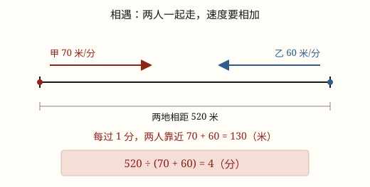

相遇问题
两人从两地同时相向出发，每过 1 分钟，两人之间的距离就缩短「速度和」。所以相遇时间 = 路程和 ÷ 速度和。
| 所属主题 | 解决问题 |
|---|---|
| 所属模块 | 数与代数 |
| 课标学段 | 第三学段（5~6年级） |
| 前置知识 | 常见数量关系（总价、路程） |
| 核心素养 | 模型意识几何直观运算能力 |
教材定位
人民教育出版社《2024年版》
落在六上第 3 单元「分数除法」的解决问题：相遇问题。
课标要求
| 数与代数·数量关系 | 在具体情境中，认识常见数量关系：总量＝分量＋分量（例13）、总价＝单价×数量、路程＝速度×时间；能利用这些关系解决简单的实际问题。 印刷第 21 页 行为动词：理解 |
|---|---|
| 数与代数·数量关系 | 能解决生活中的简单问题，并能对结果的实际意义作出解释，经历探索简单规律的过程（例14），形成初步的模型意识和应用意识。 印刷第 21 页 行为动词：运用 |
| 数与代数·数量关系 | 能运用常见的数量关系解决实际问题，能合理解释结果的实际意义，逐步形成模型意识和几何直观，提高解决问题的能力。 印刷第 24 页 行为动词：运用 |
说明
早上七点半，两列地铁从线路两端同时开出，对着开；课间，两个同学从走廊两头同时出发，面对面走。这类「同时、相向、碰头」的题，叫相遇问题。
看一个具体情形：两地相距 520 米，甲每分 70 米，乙每分 60 米，同时从两头对着走。第 1 分钟，甲挪 70 米、乙挪 60 米，两人之间剩下的路就少了 70 + 60 = 130 米。每过 1 分钟，两人之间的距离就缩短 130 米，这个 130 就是速度和。
于是「多久碰头」变成了一个除法问题：520 米里有几个 130 米，就要几分钟。相遇时间 = 路程和 ÷ 速度和，写成算式是 520 ÷ (70 + 60) = 4 分。反过来也成立：路程和 = 速度和 × 相遇时间。
反着也能求：知道相遇时间和总路程，先算速度和，再减掉已知的那个速度。整篇只有一个新动作——把两个人当成一个整体，两个速度合成了一个。
使用场景
地铁两端对开：两列车同时从线路两头发车，调度要估出它们多久在同一站交汇。
约在中间会合：两个同学从各自家里同时出发，朝同一个公园门口走，靠相遇时间定几点出门。
两个站点对发接驳车：物流园和小区之间相向发车，要算清间隔几分钟才能衔接上。
课间碰头：一个人从教室、一个人从图书馆同时出发，去同一个饮水机，路上正好遇上。
注意点
必须同时出发。如果甲先走了 10 分钟，那 10 分钟里只有甲在动，这一段要单独算，不能直接拿总路程除以速度和。
相向才加，同向要减。两人对着走，速度相加；一前一后朝同一方向走，速度相减。方向看错，答案一定错。
单位要先统一。速度是「千米/时」，时间就得按小时算；题目问「几分钟」，最后别忘了乘 60 换算。
相遇不是结束。相遇后两人继续走，总路程还会增加；只有各自一直走到对方的出发点，合起来才正好是两倍的路程。
为什么是这样

图 1：两人的箭头对着指，说明距离在「合起来」缩短——每分钟缩短的是速度和
算理推导
看图：两地相距 520 米，甲在左端、乙在右端，同时朝中间走，甲每分 70 米，乙每分 60 米。
第 1 分钟结束，甲走了 70 米，乙走了 60 米，两人之间只剩 520 - 130 = 390 米。这一分钟里，两人合起来吃掉了 130 米路。
第 2 分钟又吃掉 130 米，剩 260 米；第 3 分钟剩 130 米；第 4 分钟正好吃完。
所以问题不是「甲走多久」，而是「520 里面有几个 130」——这是等分除，520 ÷ 130 = 4。
把两个人合成一个整体，它的速度就是 70 + 60 = 130。相遇问题的全部秘密就在这一句：两个人一起走，速度要相加。
动手实验
在走廊上量出 12 米，两端各站一人，同时出发对着走，用秒表记下碰头用的秒数，再用「12 ÷ 秒数」算出速度和。然后各自单独走一遍这 12 米，量出自己的速度，两个速度加起来，看看是不是正好等于刚才那个速度和。结果对得上，就说明速度和不是背下来的，是能测量出来的。
按场景的例题
例 1（场景：行程出行） 两列地铁相向发车
两站之间的线路长 42 千米。快车从甲站开出，每时行 80 千米；同时慢车从乙站开出，每时行 60 千米。两车多少分钟后相遇？
解：速度和 80 + 60 = 140（千米/时）；相遇时间 42 ÷ 140 = 0.3（时）；0.3 × 60 = 18（分）。
答：18 分钟后相遇。
例 2（场景：物流运输） 两个配送站对发接驳车
两个配送站相距 18 千米，两辆接驳车同时从两站相向开出，速度分别是 50 千米/时和 40 千米/时。几分钟后两车相遇？
解：速度和 50 + 40 = 90（千米/时）；18 ÷ 90 = 0.2（时）；0.2 × 60 = 12（分）。
答：12 分钟后相遇。
例 3（场景：校园生活） 教室到图书馆碰头
教室到图书馆相距 520 米。小明从教室出发每分走 70 米，小红从图书馆出发每分走 60 米，同时相向而行。几分钟后相遇？相遇处离教室多远？
解：速度和 130（米/分），520 ÷ 130 = 4（分）。相遇处离教室就是小明走的路：70 × 4 = 280（米）。
答：4 分钟后相遇，相遇处离教室 280 米。
例 4（场景：上学日常） 姐弟俩相向而行
家和学校相距 960 米。姐姐从家出发每分走 70 米，弟弟从学校出发每分走 50 米，两人同时出发相向而行。几分钟后相遇？相遇时姐姐比弟弟多走多少米？
解：速度和 120（米/分），960 ÷ 120 = 8（分）。姐姐走 70 × 8 = 560 米，弟弟走 50 × 8 = 400 米，相差 160 米。
答：8 分钟后相遇，姐姐比弟弟多走 160 米。
常用推论
相遇时间 = 路程和 ÷ 速度和；路程和 = 速度和 × 相遇时间。
求另一个速度：速度和 = 路程和 ÷ 相遇时间，再用速度和减去已知的那个速度。
相遇后各自走到对方出发点：两人合起来又要走同样长的一段路，所以用的时间正好是相遇时间的两倍。
顺水行船：水在背后推你一把，顺水速度 = 船速 + 水速，跟相遇里的「速度和」是一回事——两个速度合起来往前推。
易错点
错两地相距 520 米，甲每分 70 米、乙每分 60 米，求相遇时间，算成 520 ÷ 70 \approx 7.4 分。
为什么错只算了甲一个人走完全程要多久，把乙当成了站着不动。两个人是对着走的，每分钟合起来能走 130 米。
正确520 ÷ (70 + 60) = 4 分。
错两人 4 分钟相遇，甲每分 70 米，于是说「甲走了 520 米」。
为什么错520 米是两人合起来走的路。甲只走了其中的 70 × 4 = 280 米。
正确甲走 280 米、乙走 240 米，合起来才是 520 米。
错两地相距 800 米，甲每分 60 米，乙每分 40 米。甲先走 5 分钟，乙才出发，仍用 800 ÷ (60 + 40) = 8 分作为相遇时间。
为什么错甲先走的那 5 分钟里乙还没动，这 300 米只有甲一个人在走，不是两人一起走的。
正确先减掉甲先走的路：800 - 300 = 500 米，再算 500 ÷ (60 + 40) = 5 分。
直观理解
相遇像两个人合力吃一根长面条：你一口我一口，每秒吃掉的长度是两人「口速」之和，总长除以这个和，就是吃完要几秒。追及正好相反——一个人在后面赶，每秒只能缩短两人的速度差。一个加、一个减，都是把两个人的运动合成一个人的来看。
相向同时走，速度先相加；路程除以速度和，碰头时间算得准。